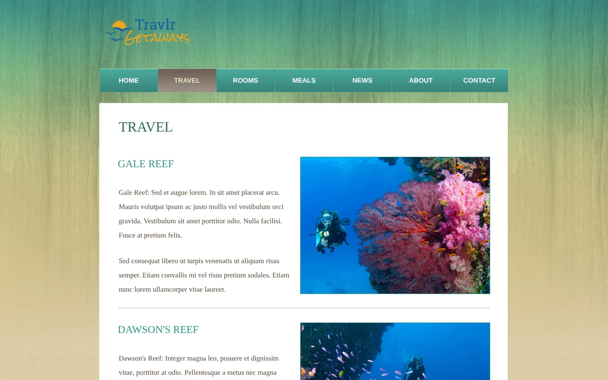
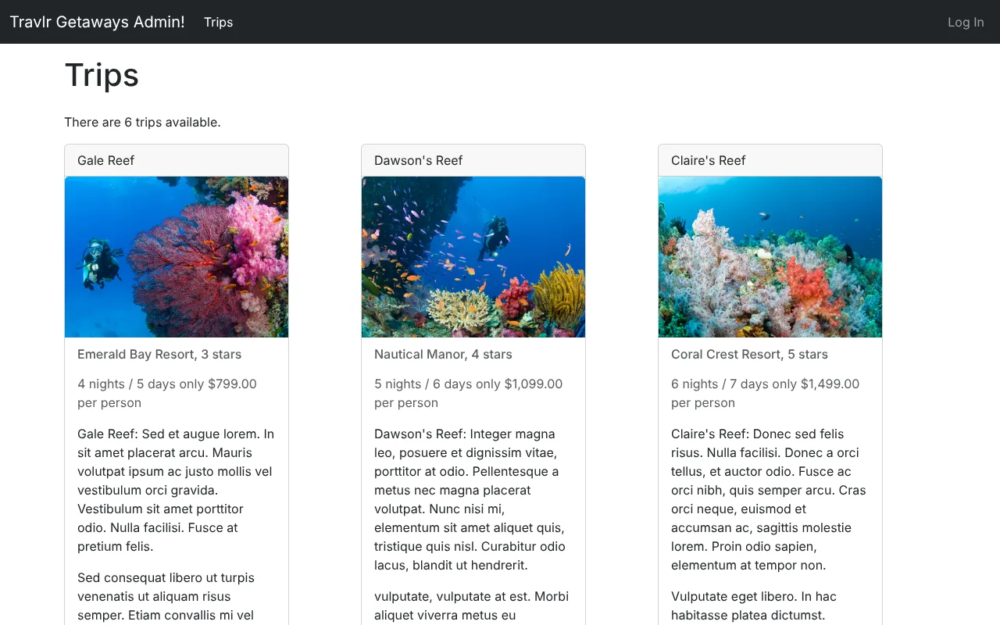
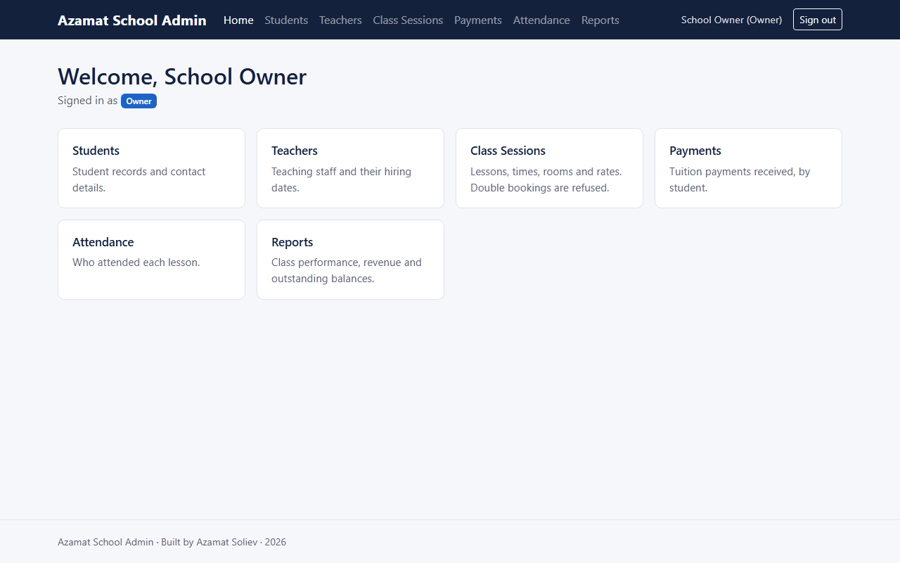
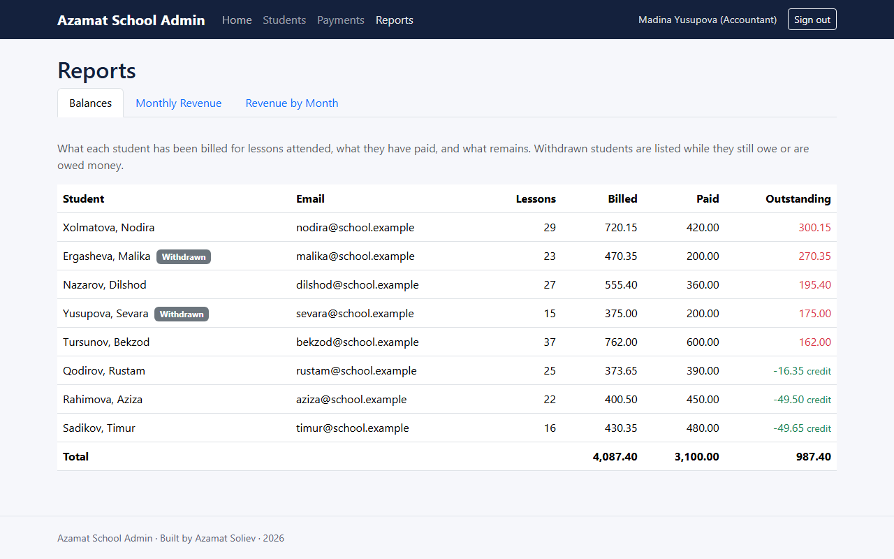

The Artifact: Original and Enhanced
Every page of this portfolio shows the same application at a different stage. It began as Travlr Getaways, the travel booking site I built for CS 465, Full Stack Development, in July and August of 2026. Across three enhancements it became Azamat School Admin, a management platform for a small language school, released as version 1.0.0 in October 2026 and patched as 1.0.1.
Original: Travlr Getaways
A MEAN stack application with three parts sharing one backend: a public travel site rendered on the server with Handlebars templates, a REST API, and an Angular single-page application for administrators. It managed one kind of record, a trip, and one kind of user, an administrator who was either signed in or not. The public pages were built on a website template supplied with the course.
Browse the original code on GitHub Download the original code




Captured from the CS 465 code, with the course’s sample trip data.
Enhanced: Azamat School Admin 1.0.1
A role-based platform for running a small language school: students, teachers, class sessions, payments and attendance, with reports for the owner, the accountant and each teacher. The travel site, its trip API and every travel image are gone. What remains is the REST API and a rebuilt Angular interface, tested by 214 backend tests, 69 interface tests and five end-to-end browser tests on every change.
Repository on GitHub Browse version 1.0.1 Download the enhanced code




Screenshots taken by the end-to-end tests, running against a real MongoDB server loaded with the demo school.
Side by side
| Aspect | Original (CS 465) | Enhanced (1.0.1) |
|---|---|---|
| Purpose | Travel booking site with an administrator screen | Management platform for a small language school |
| Records | Trips | Students, teachers, class sessions, payments and attendance |
| Users | One kind of administrator, signed in or not | Owner, accountant and teacher, each with a scoped view |
| Accounts | Anyone could register through the API | Created by an owner; the first owner from the command line |
| Passwords | PBKDF2 at 1,000 iterations | PBKDF2 at 210,000 iterations, upgraded at sign-in; sign-in attempts rate-limited |
| Data access | Every record, or one record by key | Scoped queries, a bounded conflict search and five aggregation pipelines |
| Interfaces | Server-rendered travel pages and an Angular administrator screen | REST API and a rebuilt Angular interface |
| Automated tests | The specs Angular generates with each component; none for the API | 214 backend tests, 69 interface tests and 5 end-to-end tests, run on every change |
| Documentation | Code comments | README, architecture, security and testing guides, and a changelog |
Every stage in the repository
Each stage is a tag in the repository, so its code can be browsed, compared with the stage before it, or downloaded exactly as it stood. The enhancement tags hold the code as submitted for each milestone.
| Stage | What it added | Code |
|---|---|---|
Originalcs465-original | Travlr Getaways as submitted for CS 465 (August 2026) | BrowseDownload |
Enhancement Oneenhancement-1-software-design | Roles, scoped access, the generic controller and configuration-driven interface, five school records (September 2026) | BrowseChangesDownload |
Enhancement Twoenhancement-2-algorithms | Scheduling conflict detection: bounded index search and per-teacher lock (September 2026) | BrowseChangesDownload |
Enhancement Threeenhancement-3-databases | Aggregation-pipeline reports, exact money and database security (October 2026) | BrowseChangesDownload |
Final release 1.0.0v1.0.0 | Travel features retired, accounts and sign-in rebuilt, continuous integration and end-to-end tests (October 2026) | BrowseChangesDownload |
Patch release 1.0.1v1.0.1 | Accounts stored at the original password work factor can sign in again; the documentation states counted figures only (October 2026) | BrowseChangesDownload |